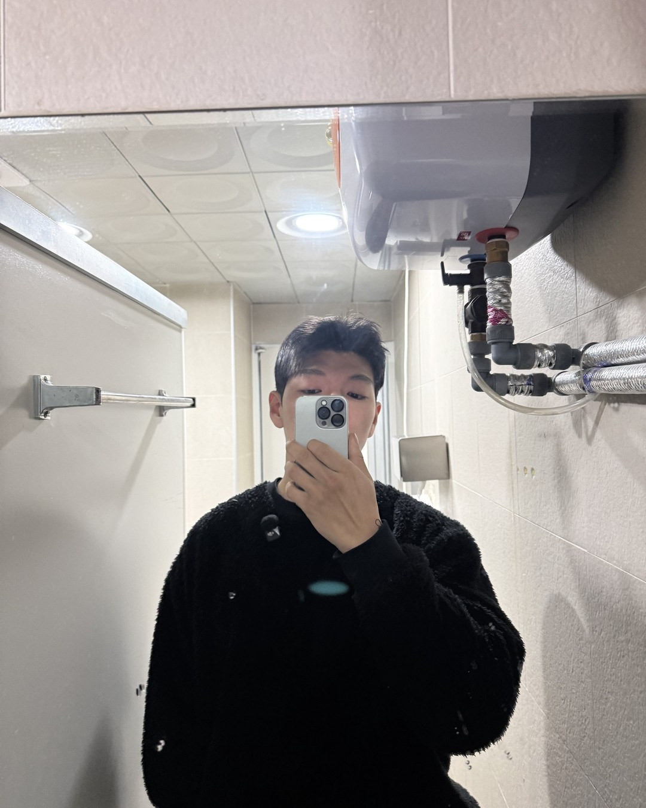
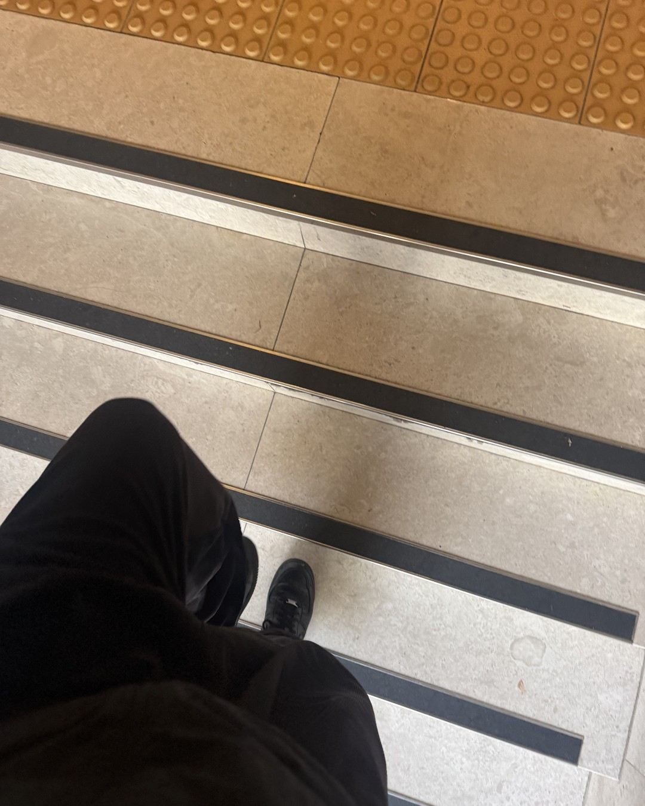
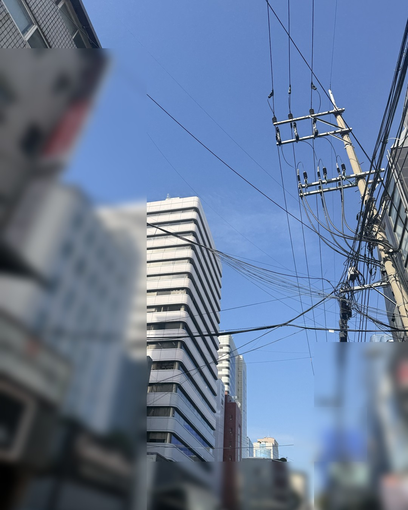
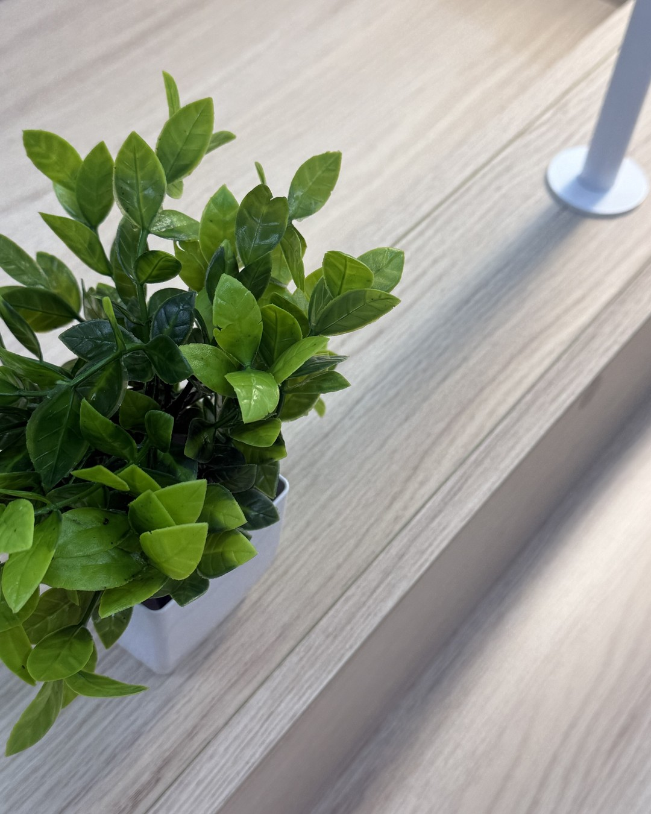
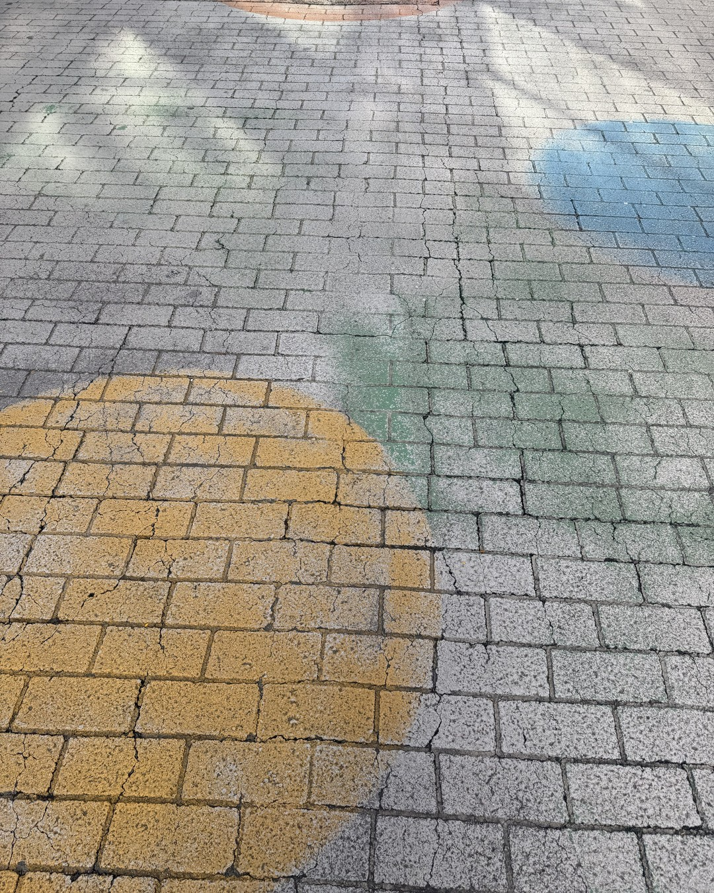
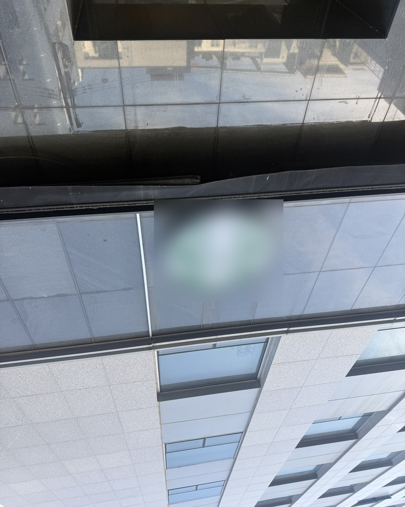
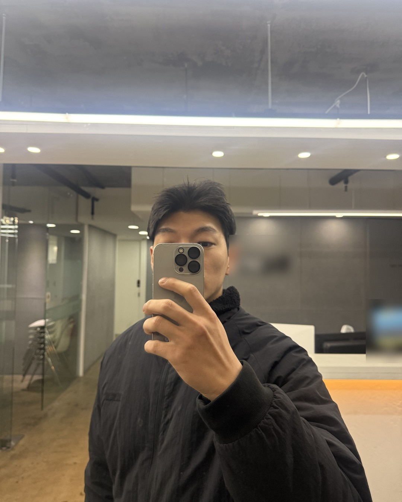

남자가 아플 때
부르는 사람
(그게 그가 기대는 자리예요.)
1/14
@mszexc
넘겨보세요 →
남자는 아픈 걸 잘 말 안 해요.
약한 모습을 보이기 싫어서요.
2/14
@mszexc
남자들끼리 하는 말 #42

그래서 아플 때 누구한테 말하는지가
누구한테 기대는지예요.
3/14
@mszexc
남자들끼리 하는 말 #42

남자들끼리는 이렇게 말해요.
"걱정할까 봐 말 안 했어."
(근데 진짜 기대는 사람한테는 말해요.)
4/14
@mszexc
남자들끼리 하는 말 #42
아플 때 당신에게 먼저 말한다면,
당신 앞에선 안 멋있어도 된다는 뜻이에요.
5/14
@mszexc
남자들끼리 하는 말 #42

"나 오늘 좀 아파"
이 한 줄은 "와줘"보다
"알아줘"에 가까워요.
6/14
@mszexc
남자들끼리 하는 말 #42
이럴 때 남자가 바라는 건
죽 한 그릇보다, 잔소리 없는 한 마디.
7/14
@mszexc
남자들끼리 하는 말 #42

"약 먹었어? 오늘은 푹 자."
이거면 충분해요.
(몸 관리 얘기는 다 나은 다음에.)
8/14
@mszexc
남자들끼리 하는 말 #42
반대로 아픈 걸 친구한테만 말하고
당신에겐 다 나은 뒤에 말한다면,
9/14
@mszexc
남자들끼리 하는 말 #42
아직 당신 앞에서 약해질 준비가 안 된 거예요.
(마음이 없다는 뜻은 아니에요.)
10/14
@mszexc
남자들끼리 하는 말 #42

아프다고 한 날, 당신이 곁에 있어 줬다면
그는 그날을 오래 기억해요.
11/14
@mszexc
남자들끼리 하는 말 #42
남자는 힘들 때 곁에 있던 사람을
쉽게 놓지 못해요.
12/14
@mszexc
남자들끼리 하는 말 #42
그러니 그가 아프다고 했을 때,
고쳐주려 하지 말고, 옆에 있어 주세요.
13/14
@mszexc
남자들끼리 하는 말 #42

이것만 기억하세요.
아플 때 부르는 사람이, 그가 기대는 사람이에요.
남자가 하는 말의 뜻은 전자책 1·2권에 · 프로필 링크에서 무료로 받아보세요
14/14
@mszexc
남자들끼리 하는 말 #42